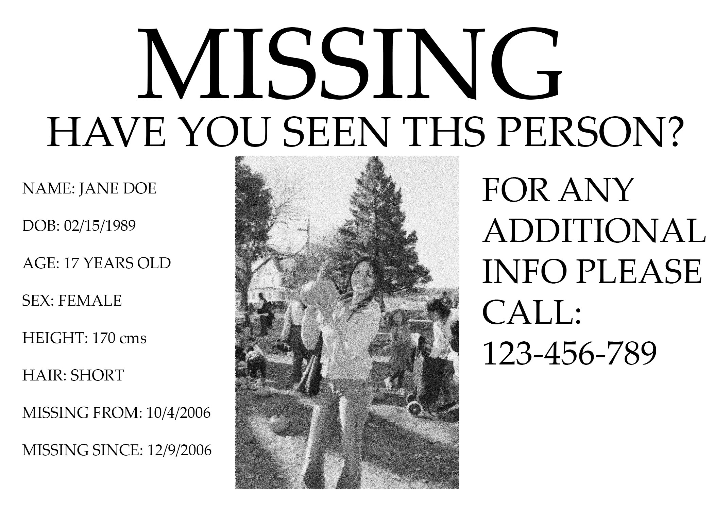

Highschool teenager Jane Doe, missing since October 13th, 2006. Suspected to be potential victim of The Appalachian Demeter
For years, the people of the Appalachian mountains have claimed to see a long, lanky figure moving through the forests, blending in with the trees, and moving silently throughout the night.
They have given it the name of the 'Demeter', after a greek goddess of the same name, also known as 'The Goddess of Harvest'.

Legend has it, the Demeter will stalk its victims, using its skin to blend in with the trees around them, similar to that of a chameleon.
Once caught by the Demeter, your soul is forever trapped within the mountains, with yout body morphing into that of a dead tree.